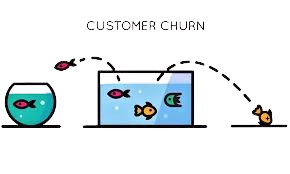

What is Machine Learning?
Machine Learning is a subset of artificial intelligence that enables computers to learn and improve from experience without being explicitly programmed. By analyzing patterns in data, ML models can make predictions, classify information, and automate decision-making processes. From recommendation systems to predictive analytics, machine learning is transforming how businesses operate and make decisions.
My Machine Learning Process
- Problem Definition: Understanding the business problem and defining clear objectives for the ML solution.
- Data Collection & Exploration: Gathering relevant data from various sources and performing exploratory data analysis.
- Data Preprocessing: Cleaning data, handling missing values, feature engineering, and preparing data for modeling.
- Model Selection & Training: Choosing appropriate algorithms (classification, regression, clustering) and training models.
- Model Evaluation: Using metrics like accuracy, precision, recall, F1-score, and ROC curves to assess performance.
- Model Deployment: Deploying models to production using APIs, cloud services, or embedded systems.
- Monitoring & Maintenance: Continuously monitoring model performance and retraining as needed.
Tools & Technologies
Featured ML Projects

Bank Subscription Campaign Prediction
Built a machine learning model to predict customer subscription likelihood for bank marketing campaigns, achieving 89% accuracy.
View CodeReal Estate Price Prediction
Developed a linear regression model to predict house prices based on various features with 87% accuracy.
View Code
Titanic Survival Prediction
Created a logistic regression model to predict passenger survival on the Titanic with comprehensive EDA.
View CodeWhy Machine Learning Matters
"Machine Learning is not just about algorithms—it's about solving real business problems with data-driven insights that drive growth and efficiency."